A terminal, built in.
Ctrl ` opens a terminal that runs keytool, openssl and friends without leaving the app, with ready-made commands for the open keystores. Test-NetConnection works on every platform.
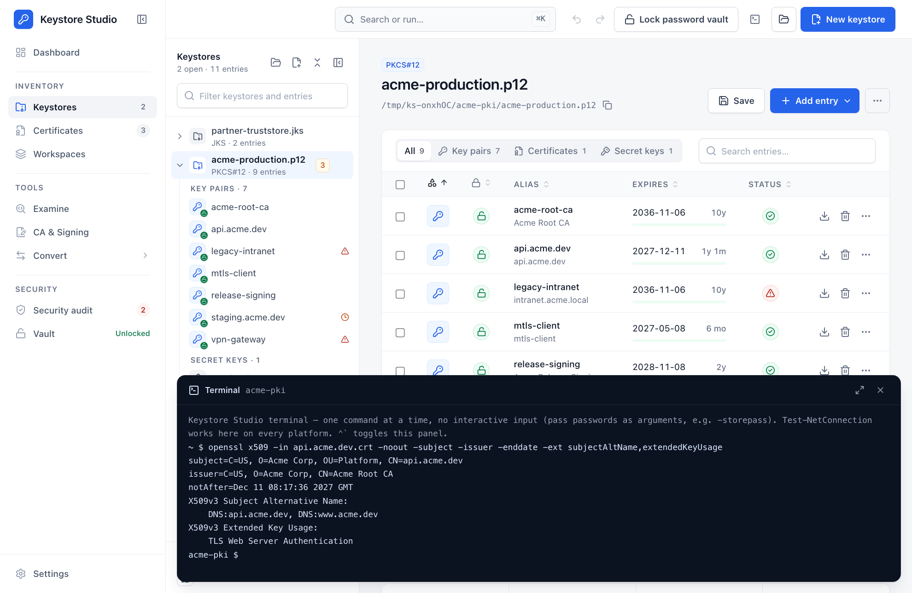
 Keystore Studio
Version 1.0.0
Keystore Studio
Version 1.0.0
A native desktop workbench for Java keystores, PKCS#12 files and X.509 certificates. Open, convert, sign, audit and inspect, with every operation running locally in a Rust engine.
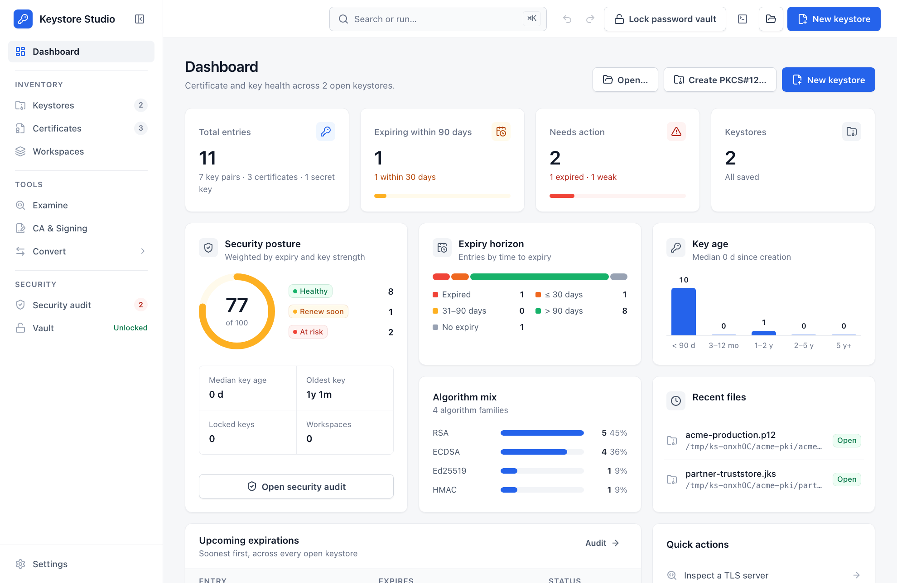
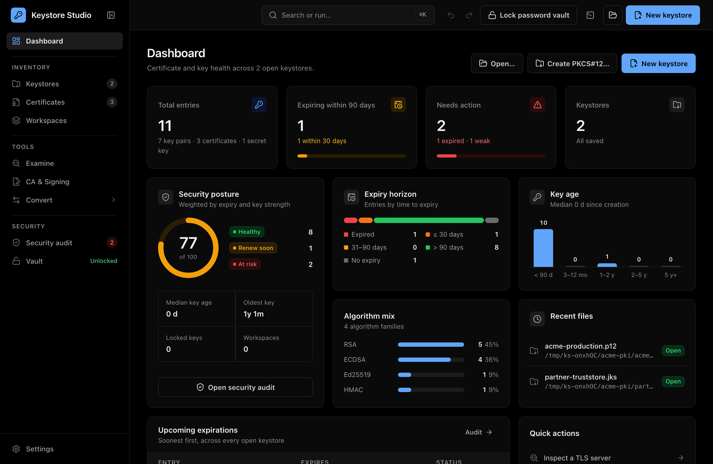
Why Keystore Studio
Both are powerful. Day-to-day certificate work still means juggling flags, formats and passwords across two tools. Here is the same work, side by side.
keytool -list -v -keystore acme.p12 -storepass …A wall of text, one keystore at a time.
A navigator of every open keystore, entries grouped by type, expiry and health at a glance.
keytool -importkeystore -srckeystore a.jks -srcstoretype JKS -destkeystore a.p12 -deststoretype PKCS12
Save as… and pick a format. The equivalent command is shown, ready to script.
-providerpath bcprov.jar -providerclass org.bouncycastle.jce.provider.BouncyCastleProviderOn every keytool call.
Built in. No Java and no provider jar needed.
openssl pkcs12 -export -inkey key.pem -in certificate.pem -out bundle.p12
Build a PKCS#12 in one step. The key is matched against the certificate before anything is written.
for ks in *.jks; do keytool -list -v … | grep Until; doneThen read the dates yourself.
A health score across every open keystore, with Rotate key and Renew one click away.
openssl s_client -connect api.acme.dev:443 -showcerts
Protocol, cipher, ALPN, the full chain and a trust and hostname verdict against your OS trust store.
Prefer the command line? Keep it. Every converter prints the command it is equivalent to, and a built-in terminal sits one shortcut away.
A tour of the app
The real app, with demo keystores made by keytool and openssl. Scroll through the pages you will use every day.
Keystores
Open any number of keystores at once. The navigator groups each one's entries into key pairs, secret keys and trusted certificates, and the entry table shows expiry and health at a glance.
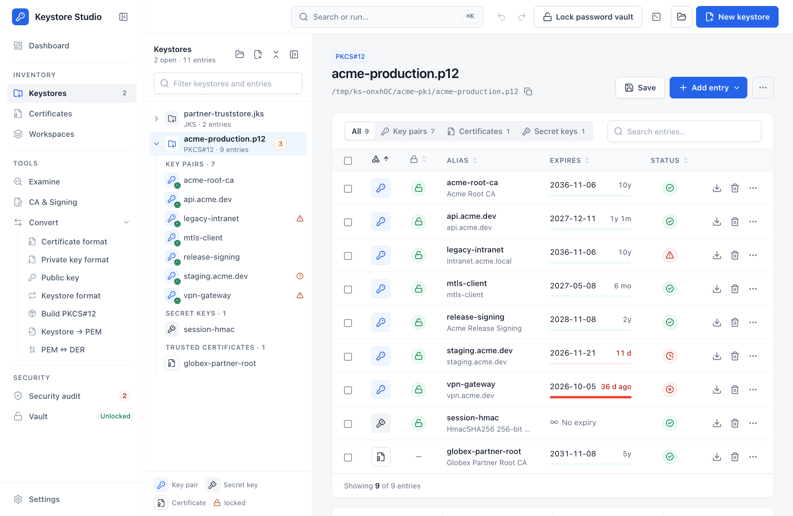
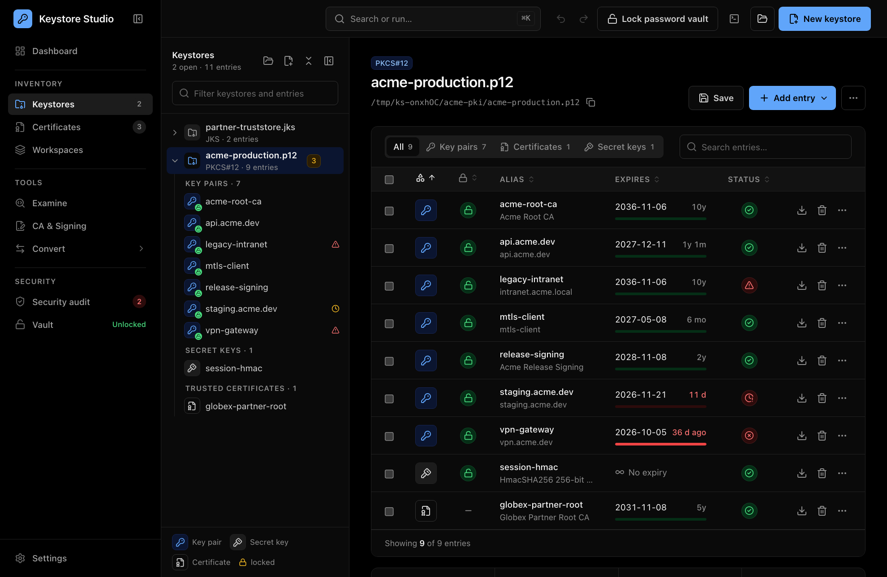
Entry inspector
Select an entry to see subject and issuer, validity, key and signature algorithms, the full chain, every extension and the keys. The same panel exports the entry, creates a CSR, installs a CA reply, renames it or adds labels.
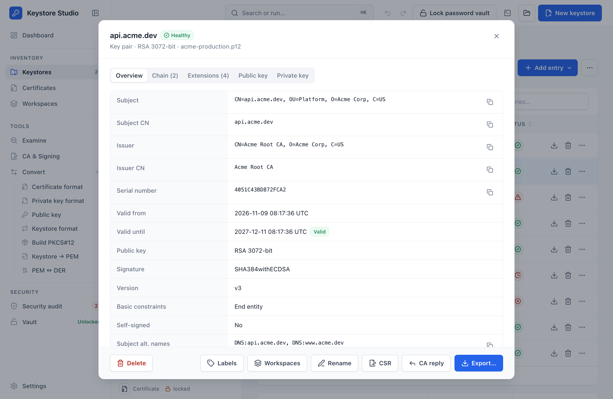
Certificates
PEM, DER, chains and PKCS#7 bundles opened on their own get their own page, one row per certificate. Filter CAs from end-entity certificates, add them to a keystore or workspace, and export them in any format.
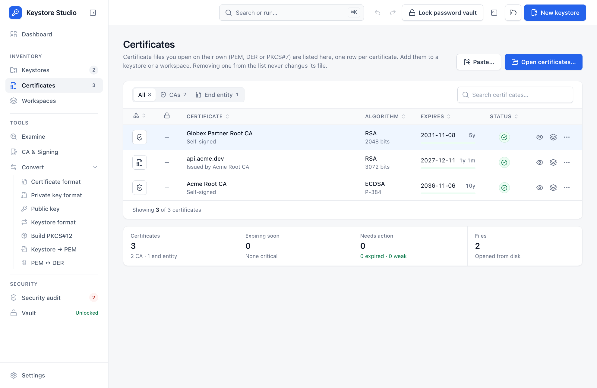
Examine
Inspect a live TLS server: protocol, cipher suite, ALPN, handshake time, the full chain, and a trust and hostname verdict against your operating system's trust store. The same page tests whether a port is reachable, decodes anything you paste, and compares two certificates.
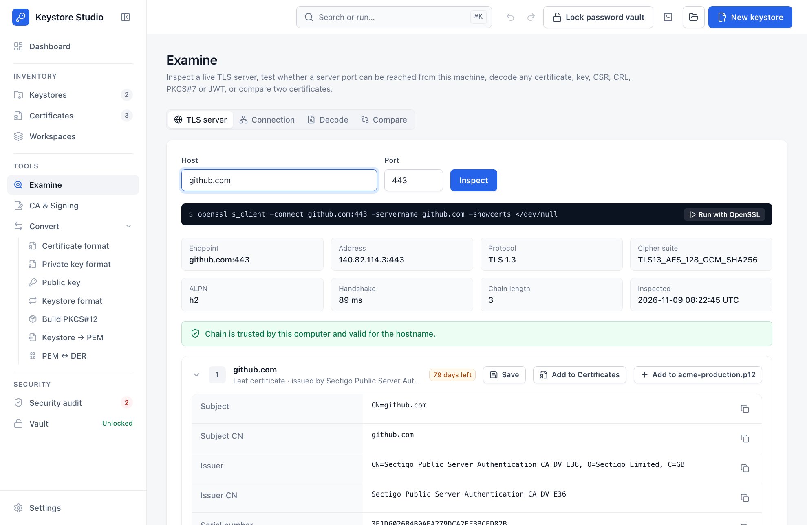
CA & Signing
Use any CA key pair in an open keystore as a certificate authority. Sign CSRs after the request is verified and its SANs and usages are shown, issue CRLs, create and verify CMS/PKCS#7 signatures, sign and verify JWTs, sign JARs that jarsigner accepts, add RFC 3161 timestamps and generate DH parameters.
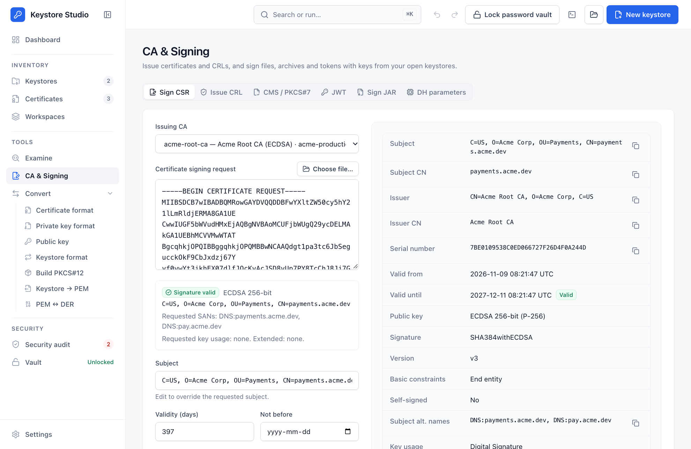
Convert
Every format conversion lives in one place, and each one shows the equivalent openssl, ssh-keygen or keytool command, with the Bouncy Castle provider flags where keytool needs them. Script what you just did.
keytool -importkeystore -srckeystore partner-truststore.jks -srcstoretype JKS -destkeystore partner-truststore.p12 -deststoretype PKCS12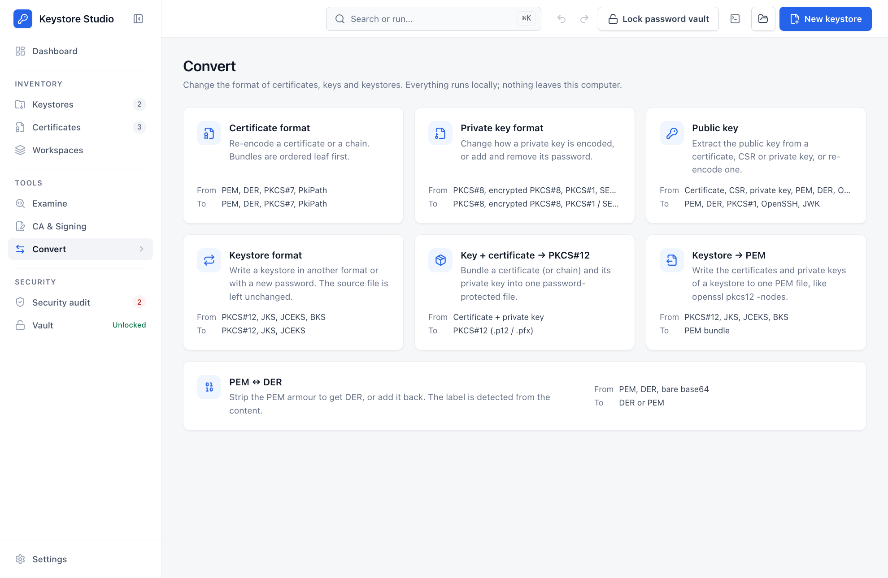
Security audit
A health score across every open keystore, with findings for expired and expiring certificates, short keys, SHA-1 signatures, legacy formats and incomplete chains. The report exports to CSV.
Replaces the key and keeps the subject, SANs and usages, re-issued by the original CA when it is open.
Re-issues the certificate with the same key from the open issuing CA.
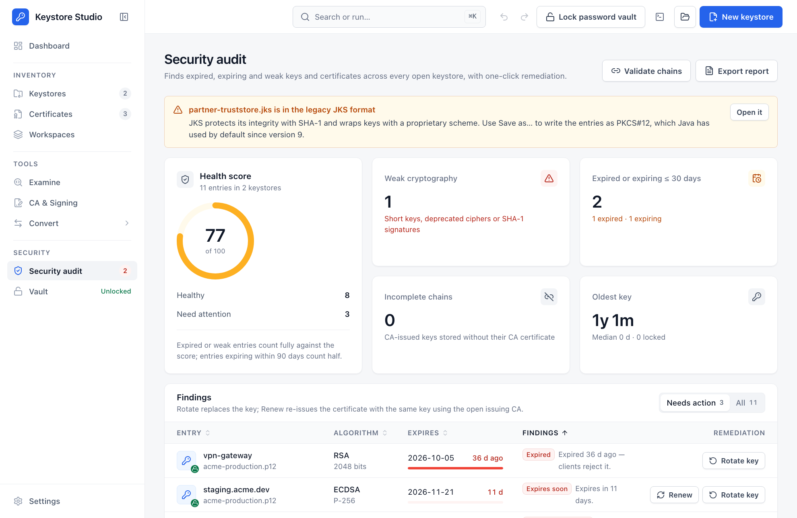
Vault
Remember keystore passwords under a single master key. Keystores from your last session reopen as soon as the vault is unlocked.
Auto-locks after inactivity. Changing the master key re-encrypts every secret. Forgot it? Reset the vault and start again.
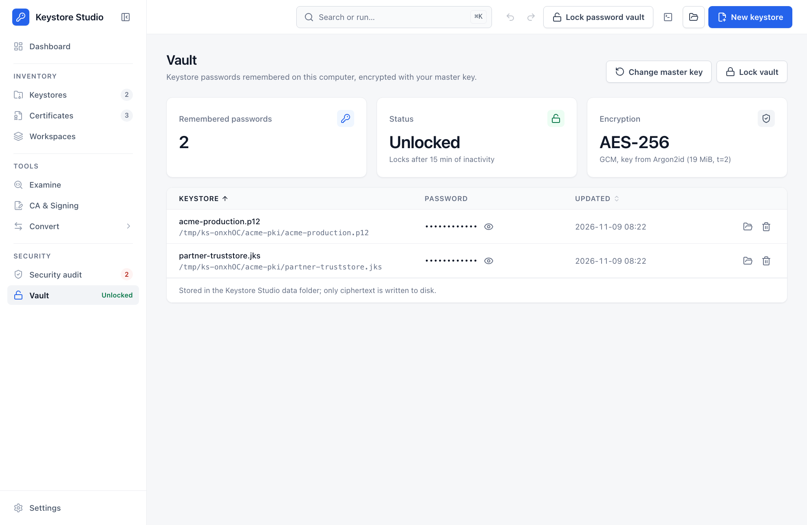
Terminal and command palette
Ctrl ` opens a terminal that runs keytool, openssl and friends without leaving the app, with ready-made commands for the open keystores. Test-NetConnection works on every platform.

Ctrl⌘ K reaches every page, action, keystore and entry.
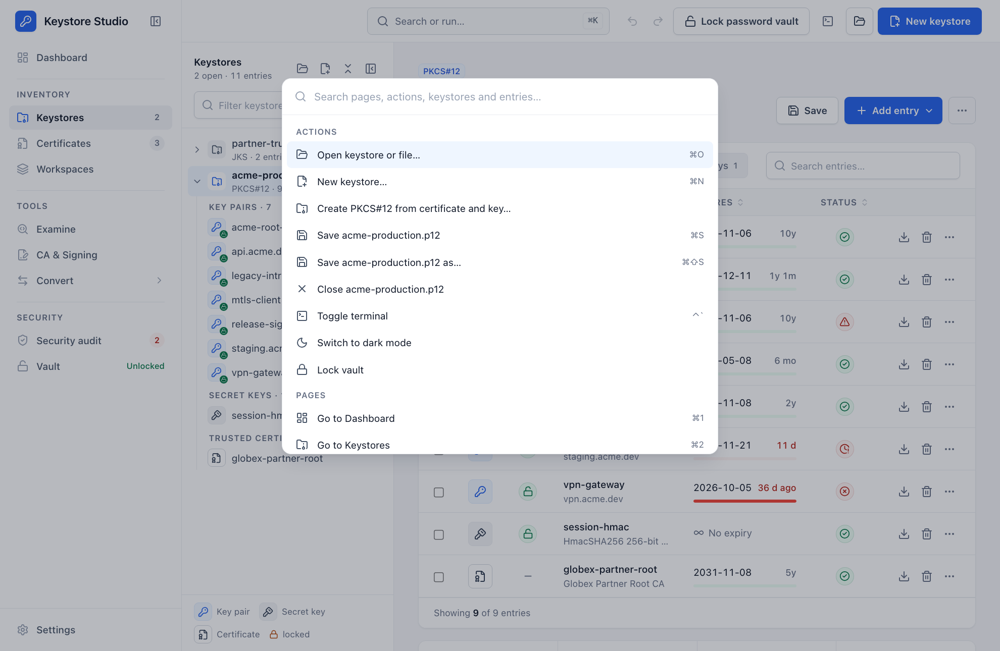
Open, save, undo and jump between all ten pages without the mouse.
Light, dark or follow the system, under Settings → General → Appearance.
Formats
Six keystore formats, converted between each other in any direction. The Bouncy Castle writers reproduce Bouncy Castle's own files byte for byte.
Java's default since version 9. Classic MAC for maximum compatibility; PBMAC1 (RFC 9579) is read and can be written. An optional profile (3DES, SHA-1 MAC) for Java 8 and Windows 7.
The legacy Java format. Per-key passwords are preserved, and the audit suggests moving to PKCS#12.
Java's store for secret keys, including sealed secret key entries. Per-key passwords are preserved.
Bouncy Castle keystore. Versions 1 and 2 are read; version 2 is written.
Bouncy Castle's encrypted-container keystore. Store version 0 is not read.
Bouncy Castle FIPS keystore. Stores protected with HMAC-SHA3-512 are refused and PBE-key entries are listed as not shown.
| Object | Opens and imports | Exports and converts to |
|---|---|---|
| Keystores | PKCS#12, JKS, JCEKS, BKS, UBER, BCFKS, including stores without a password | All six formats, single-entry PKCS#12, PEM bundle, a truststore from certificates |
| Certificates | PEM, DER, chains, PKCS#7 bundles, PkiPath, Netscape sequence | PEM, DER, full chain, PKCS#7 (PEM or DER), PkiPath, Netscape sequence |
| Private keys | PKCS#8 (including scrypt and PBES1), PKCS#1, SEC1, DSA, OpenSSL Proc-Type encrypted PEM, OpenSSH, JWK | Encrypted or plain PKCS#8, PKCS#1/SEC1, OpenSSH, JWK |
| Public keys | From a certificate, CSR or key; SSH2 public keys | PEM, DER, PKCS#1, OpenSSH, SSH2 (RFC 4716), JWK |
| Secret keys | Generate AES, HMAC and 3DES | Hex, JWK |
| CSRs, CRLs, CMS, JWTs | Decode and inspect anything you paste or pick in Examine | Sign CSRs, issue v2 CRLs, sign and verify CMS and JWTs |
Interoperability
Everything Keystore Studio writes is read back by keytool, jarsigner and openssl in its test suite. Keystores, CSRs, CRLs, CMS, JARs, DH parameters and exports all make the round trip.
$ cargo test --test interop -- --list
our_keystores_open_in_keytool: test
keytool_keystores_open_in_keystore_studio: test
openssl_pkcs12_variants_open: test
pbmac1_pkcs12_interop_with_openssl: test
certificates_csrs_and_crls_verify_with_openssl: test
keytool_ca_workflow_with_keystore_studio_ca: test
cms_interop_with_openssl: test
built_pkcs12_opens_in_openssl_and_keytool: test
dh_parameters_pass_openssl_check: test
signed_jars_verify_with_jarsigner: test
timestamps_verify_with_openssl_ts: test
tls_inspection_against_openssl_server: test
openssh_keys_interop_with_ssh-keygen: test
legacy_pkcs12_opens_in_openssl_and_keytool: test
bouncy_castle_keystores_interop_with_keytool: test
… and more. Each test is skipped if its tool is missing.
$ Every parser is fed truncations, bit flips, forged length headers of real keystores and deep nesting, and must return an error rather than panic. Coverage-guided fuzz targets get a smoke run in CI.
The webview loads only the app's own code. object-src 'none', form-action 'none', frame-ancestors 'none'.
Dependencies are checked for advisories, licences, sources and bans on every change, beside clippy and rustfmt.
The real UI creates, saves, edits, signs, audits, restarts and restores a session, then checks the written files with keytool and openssl.
Privacy
No accounts. No analytics. No advertising, crash reporting or automatic update checks. Keystore contents and passwords are held in memory and reach disk only in the files you save.
Each one happens only when you start it. That is the complete list.
Connects to the host and port you enter, the same way a browser or openssl s_client would.
Checks whether a server port can be reached from this machine, and says why not when it cannot.
When you turn timestamps on, a hash of what you signed goes to the timestamp authority you chose, with the app name and version as the user agent. Your content and keys are not sent.
When you ask, the app queries the certificate's OCSP responder or downloads its CRL, which tells that CA the certificate is being checked.
Commands you run in the built-in terminal run with your permissions; what they send is up to the command.
Settings, workspaces, labels, recent and open file paths, public certificates on the Certificates page, the vault (encrypted) and a record of certificates you issue as a CA. No key material.
%APPDATA%\~/Library/~/.local/Set KEYSTORE_STUDIO_DATA_DIR to use another folder. Deleting the folder removes everything the app keeps.
And so much more
Across every edit, and across opened files.
Move entries between open keystores.
Drop files anywhere in the window.
Tag entries the way your team thinks.
Group entries and certificates by project or audit scope.
A keystore inventory or the audit report.
Last session's keystores reopen with the vault.
Nothing is lost on close or quit.
Certificate and key into a .p12 or .pfx in one step.
PKCS#12 with 3DES and a SHA-1 MAC for Java 8 and Windows 7.
Finds java, keytool, jarsigner, OpenSSL and more, with install commands.
Key pairs open locked until you give their key password.
RSA 2048–4096, ECDSA P-256/384/521 and Ed25519.
Generate AES, HMAC and 3DES keys; export as hex or JWK.
Generate a CSR, then install the reply into its key pair.
Two certificates, side by side, in Examine.
Paste a certificate, CSR, CRL, key, PKCS#7, JWT or keystore.
RFC 7919 groups or freshly generated safe primes.
On CMS and JAR signatures, from the TSA you choose.
Built into the terminal on every platform.
Stores without a password open too.
Preserved in JKS and JCEKS stores.
A true black dark theme.
Pick up where you left off.
Keyboard
Shown for your platform: Ctrl on Windows and Linux.⌘ on macOS, where Ctrl works too.
| Action | Shortcut |
|---|---|
| Command palette | Ctrl⌘K |
| Terminal | Ctrl` |
| Open | Ctrl⌘O |
| New keystore | Ctrl⌘N |
| Save | Ctrl⌘S |
| Save as | Ctrl⌘ShiftS |
| Undo | Ctrl⌘Z |
| Redo | Ctrl⌘ShiftZ |
| Switch page | Ctrl⌘1to8 |
| Convert | Ctrl⌘9 |
| Certificates | Ctrl⌘0 |
Tech specs
10 and 11, x64
11 Big Sur or later, with Safari 16.4 or later
Ubuntu 22.04+, Debian 12+, Fedora 38+ or similar
cmd.exe on Windows, /bin/sh elsewhere%APPDATA%\keystore-studiomacOS ~/Library/Linux ~/.local/share/Override with KEYSTORE_STUDIO_DATA_DIRcargo deny and clippy in CIFAQ
Something missing? Open an issue on GitHub › or send feedback ›
Yes. It is open source under the MIT licence, for personal and commercial use. There are no accounts, no paid tier and nothing to sign up for.
Windows (x64) and Apple silicon Mac installers are on the downloads page. For Linux and Intel Macs, clone the repository, run pnpm install and pnpm tauri build. You need Node 22, pnpm 9, stable Rust and the Tauri system dependencies for your OS.
No. The bundled Rust engine does all the cryptography itself. Settings → Tools lists the command-line tools the app refers to (java, keytool, jarsigner, the Bouncy Castle provider jar, OpenSSL, ssh-keygen, PuTTYgen) and how to install any that are missing, but the engine needs none of them. You only need them to run those commands yourself in the terminal.
No. There is no telemetry, analytics, crash reporting or update check. The only network traffic is a TLS inspection or connection test you start in Examine, timestamp requests when you turn them on, which send a hash, never your content or keys, and an OCSP or CRL revocation check when you ask for one. See the full list.
Keystore contents and passwords live in memory and reach disk only in the keystore files you save. Session state (open keystore paths, workspaces, labels, recent files, settings) and the encrypted vault are kept in %APPDATA%\keystore-studio on Windows, ~/Library/Application Support/keystore-studio on macOS and ~/.local/share/keystore-studio on Linux. Set KEYSTORE_STUDIO_DATA_DIR to use another folder.
No. Keys on a hardware token cannot be exported, so signing has to happen on the device through a vendor library. That does not fit the "a keystore is a file" model the app is built on.
Not yet. Convert them first with puttygen key.ppk -O private-openssh, then open the OpenSSH key.
Post-quantum keys written by newer JDKs (ML-DSA, ML-KEM, SLH-DSA), and DSA, Ed448 and RSA-PSS keys, load and save losslessly but cannot be used for signing. DSA and RSA-PSS signatures on certificates, CSRs and CRLs are verified.
PKCS#12 files are written with the classic MAC for maximum compatibility, and an optional compatibility profile (3DES, SHA-1 MAC) targets Java 8 and Windows 7. PBMAC1 (RFC 9579) is read and can be written when you want it.
A few. BCFKS stores protected with HMAC-SHA3-512 are refused, PBE-key entries are listed as not shown, and a signature-protected BCFKS store is saved back with a password MAC. UBER store version 0 is not read. Timestamp tokens are bound to the signature they cover, but the timestamp authority's own chain is not validated in the app; openssl ts -verify and jarsigner -verify do that.
The master key is never stored, so it cannot be recovered. Reset the vault on the Vault page: the remembered passwords are deleted, and your keystore files are not touched.
Keystore Studio is MIT licensed. Read the code, file an issue, or download it.